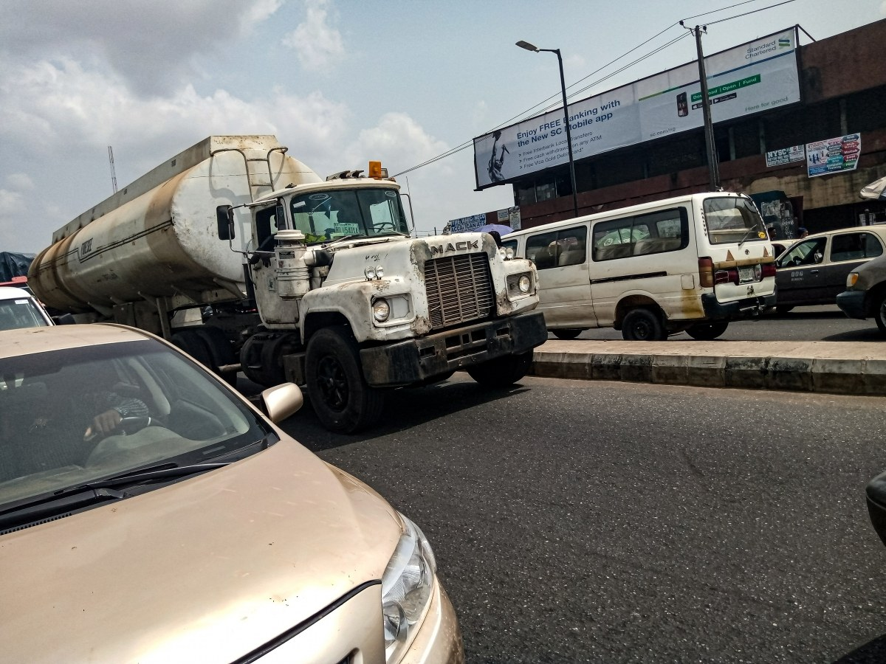

Photograph: Onyango George / EA Hospitality Pulse · Kenya Power marks shown are the property of KPLC and appear incidentally
Kenya's grid got cheaper. Leaving it got harder. Both happened in the same week.
The regulator cut September's electricity pass-through by 54 cents a unit and, in a separate notice days later, halved the credit for power that hotels and lodges push back into the grid. Read together, they are not two notices. They are one policy.
Joseph Siror had a warning, and it was not the one the room was expecting.
On 11 August, flanked by two acting general managers at Kenya Power's State of the Grid press briefing in Nairobi, the utility's managing director set out what sounded at first like an engineering complaint. Wind and solar now supply 34 per cent of the country's energy mix at peak daytime demand of roughly 1,900MW, he said, rising to 36 per cent when load falls to around 1,200MW. Global practice puts the comfortable ceiling for variable renewable energy at about 15 per cent of a grid's firm capacity.
"Our current system under the take-or-pay model of power purchase has led to an increase in VREs to over 20 per cent against a recommended average of 15 per cent," Siror said.
Then he said the part that should have made every hotelier in the country look up.
"Given the intermittent nature of wind and solar, we have no option but to dispatch and pay for generators, increasing the overall cost of power."
And, a few minutes later, the sentence that turns a technical briefing into a commercial one: "The true cost of VREs is its own cost and the additional power that we pay for to stabilise the grid."
Read that carefully. The national utility, in a formal briefing, told the country that the growth of intermittent generation is why electricity costs what it costs, and that the bill for stabilising around it lands on the consumer. It was not a threat. It was a statement of the cost structure. But it was also, in retrospect, a signal about the direction of regulation.
Six weeks later, the regulation arrived.
On 18 September, the Energy and Petroleum Regulatory Authority gazetted the pass-through charges applying to every electricity meter reading taken in Kenya during September: a Fuel Energy Cost Charge of KSh 3.00 per kilowatt hour, a foreign exchange fluctuation adjustment of about KSh 1.14 set against KSh 1.32 billion in sector exchange costs, and a Water Resource Management Authority levy of 1.48 cents. Together, KSh 4.16 a unit.
August's notices, gazetted on 14 August as numbers 13172, 13173 and 13174, had set the same three lines at KSh 3.51, KSh 1.1777 and KSh 0.015. Total: KSh 4.7027.
The month on month move is a fall of 54 cents a unit, about 11.5 per cent. In a full service hotel, where electricity sits among the largest controllable costs after payroll and food, that is a visible number. A 150 room city property running laundry, kitchen, chillers, lifts and meeting space air conditioning will see it in the September bill and feel briefly relieved.
The relief is real. It is also the most misleading number an operator will read this month.
Look at which line moved. Essentially the entire 54 cents came out of the fuel charge, the component that recovers thermal dispatch and swings every month in both directions. It is precisely the line Siror was describing in August when he explained why the utility must fire up generators whenever solar and wind output dips. It falls when the mix behaves and rises when it does not. The forex adjustment, the structurally sticky component, barely moved at all, down around four cents. In August, independent power producers alone accounted for KSh 1.039 billion of the KSh 1.353 billion in sector exchange gains and losses that this line recovers. Nothing about one favourable month of thermal dispatch touches that exposure.
So September is cheap in the reversible line and unchanged in the permanent one. That alone would make it a poor basis for a 2027 rate card. But the more consequential development is not in the pass-through notice at all.
In a separate notice the same week, EPRA amended the Schedule of Tariffs 2023. Customers generating their own renewable power under net metering are now credited, in the tariff schedule itself, for half the electricity they export to the grid. The amendment also defines feeding power into the Kenya Power network without approval as "dumping", and provides that the exporter be billed for that power at the applicable base tariff.
Neither provision is a bolt from the blue. The Energy (Net-Metering) Regulations 2024 already set the export credit at 50 per cent of the retail tariff, for renewable systems below 1MW, with credits carried forward monthly and expiring at the end of the utility's financial year. What changed in September is that the arrangement was written into the tariff schedule alongside the "dumping" definition, at the moment the tariff schedule was being amended anyway.
Put the two notices side by side and the picture is not two unrelated housekeeping items. It is a coherent position. The utility said in August that self-generation is what makes the grid expensive to stabilise. The regulator, in September, cut the cost of staying on the grid for a month and simultaneously confirmed in the tariff schedule that leaving it earns you half credit, with a billable penalty for doing it without paperwork.
For a decade, East African hospitality has treated self-generation as the hedge against utility volatility. Lodges went solar because diesel was expensive and the grid was unreliable. City hotels went solar because the pass-through lines moved and nobody could budget against them. That hedge has just been repriced by the regulator, in the same week the headline said prices were falling.
The regional context sharpens it. Kenya has by a wide margin the highest dependence on variable renewables in the Eastern Africa Power Pool. Kenya Power put the comparison on the record in August: Egypt at 10.4 per cent, Ethiopia at 5.3 per cent, Uganda at four per cent, Tanzania at 1.2 per cent. Geothermal, hydro, imports and thermal still provide roughly 80 per cent of Kenya's mix as baseload, but the variable share is the outlier in the region by a factor of eight against Tanzania.
Which means Kenyan hospitality is the furthest along a curve the rest of East Africa is only beginning to climb. A Tanzanian lodge putting panels on the roof this year, or a Kigali hotel sizing a system against its chiller load, is not yet inside this argument. It will be. The precedent being set in Nairobi about who bears the cost of intermittency, and about what an exported kilowatt hour is worth to the person who generated it, is the precedent those markets will inherit when their own variable share starts climbing toward Kenya's.
There is a further reason not to read September as the start of a downward trend. In November 2025, the National Assembly Committee on Energy asked EPRA to introduce, through monthly bills, new pass-through costs from July 2026 so that Kenya Power could recover the billions it spends building and maintaining the rural electricity grid. Parliament's stated direction of travel on pass-through lines is upward, not downward, and it is aimed at exactly the mechanism that delivered this month's 54 cent fall.
What should an operator actually do with this?
Recompute the energy line off the September reading rather than August's, and resist writing a one month number into anything that runs into 2027. The fall is genuine and worth banking in this month's accounts. It is not a trend, and the component that produced it is the component most likely to reverse.
Second, and more urgently, establish this week whether your system exports. Many properties with rooftop solar have inverters configured to push surplus into the grid during low occupancy periods, particularly bush lodges and conference hotels with lumpy demand, and a meaningful number have never formalised a net metering agreement because the export was incidental rather than commercial. The September amendment gives that incidental export a name and a price. A property that discovers its position when a bill arrives is negotiating from the weaker end of the table. A property that has the agreement on file, or has confirmed in writing that it exports nothing, is not.
Third, watch 14 October. Kenya's reduced 8 per cent VAT on petrol, diesel and kerosene expires that day, and EPRA's frozen pump cycle ends on the same date. Two cost events, one day, landing on the generator fuel and the transfer fleet at once. Anything signed now that runs past that date needs a cost variation clause, and a utility line that happened to fall in September is not a reason to go into October without one.
The coastal picture splits. Kenyan properties in Diani, Watamu and Mombasa take the September relief in full. Zanzibar properties do not. They sit on a separate utility entirely and carry their own infrastructure tax, levied at two per cent of the net value of electricity supplied, which no Kenyan gazette touches in either direction.
Siror also offered the honest caveat that tends to get lost in the enthusiasm for storage. Battery capacity, he said, could help with intermittency but would not entirely eliminate the problem, particularly when renewable generation falls away. That is the sentence to remember if a contractor arrives with a proposal to solve your energy exposure permanently. The grid's problem is not solved, the regulator has now priced it, and the price is being shared out between everyone connected to the network and everyone trying to leave it.
A fall of 54 cents a unit is a good month. It is not a strategy.
📣 Telegram 💬 WhatsApp 💼 LinkedIn 📚 All guides